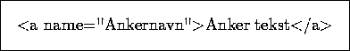

Et anker kan man tenke på som et merke i et dokument. Merker setter man fra seg for å kunne referere til disse stedene i dokumentet, dvs. hoppe dit via hyperlinker. Dette kan man gjøre fra andre steder i samme dokument eller fra andre dokumenter på andre maskiner på Internettet.
Eksempel 6, 7 og 8 over viser hva slags URLer man benytter for å linke til et anker i et dokument.
Vi må også ha en mekanisme for å sette ankeret inn i teksten og knytte det til et område. Dette gjøres slik:

her blir altså "Ankernavn" navnet på ankeret, og teksten som er knyttet til ankeret blir altså dit man kommer hvis man aktiverer en hyperlink som peker ut ankeret.
NB! Legg merke til at når man setter opp en link til ankeret, så må ``krysstegnet'' '#' settes inn foran ankernavnet slik vist i eksempel 6, 7 og 8 over.